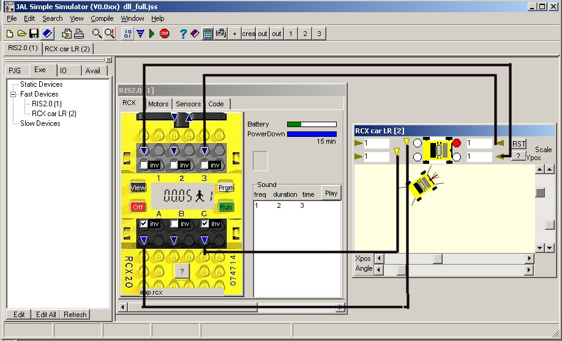
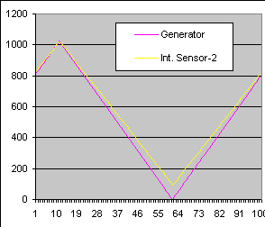
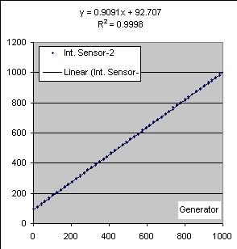

December 2002
JALss, RCX demos
Demo1, moving car with left-right motor
After the program is started, you should see an image almost similar to the image below.
The electronic circuit consist of 2 devices, the virtual RCX (VRCX) and a room with a VRCX-car.
The image on the screen will not show the electrical connection wires between the devices, these are only drawn in the image below for clearity (but there are other ways to see the connections)..
Now just press the RUN button (green arrow), and see how the car is moving around.

The car will start driving around, and when bounces against a wall, it will produce a RCX-sound (through the PC speaker) and correct its direction.
What' happens is that the virtual RCX is loaded with a small NQC program (ExVRCX1.NQC, which filename is shown at the bottom of the VRCX). The program controls motors A and C and watches the sensors 1 and 3, so it can detect bumping against a wall with the front of the VRCX. You can move the car around by hand, through the sliders at the bottom and right side of the car-device.
Pressing the VIEW button on the VRCX, will function exactly as on a real RCX. Select sensor 1 or 3 in the display and watch what happens when the car bounces against the wall.
Now go to the sensor tab on the VRCX., you get to see an internal scope, that shows in "real-time" all the sensor signals. To show the capabilities, here sensor 1 is simply set as a passive sensor, while sensor 3 is set as an active (light) sensor. Watch what happens when the car hits the wall. More about the sensor scope.
Now switch to the motor tab and watch what happens when the car bumps to the wall (increasing power consumption). More about the motor scope.
At last take a look at the code tab, where you can see the assembler code of the NQC program. More about the code tab.
Demo2, direct control of the VRCX by BricxCC
One of the VRCX in the circuit can be directly controled by a modified version of BricxCC.
BricxCC can be launched form the menu through : control > Launch Bricxcc.
If you've a slow computer or operating system, launching of Bricxcc can be much quicker if you first stop the simulation, by pressing the STOP button.
Now a problem can occure, because Bricxcc reads it's settings from the windows registry, so it's not possible for me to set all the preferences correct. What is important is that BricxCC selects the USB-1 port, because that is redirected to the VRCX.
After Bricxcc shows up, start the simulation again (because that's ofcourse the only mode where communication can take place).
If you know the filepaths, you can do an intermediate experiment.
Goto BricxCC, open the file ExVRCX1.NQC (located at <JALss-path> \ NQC-files \ ....
Change something, like removing the sounds and press the DOWNLOAD button on BricxCC.
If everything is ok, the following will hapen:
- the program is compiled
- the JALss simulation will be stopped and JALss will come in focus
- the "light bue" load screen will showup in the VRCX
- and at last the simulation is started again with the new program loaded
Now the first demo is still running, you can see some of the tasks coloring yellow or green. Now start in BricxCC the "direct control" and press the button "stop all tasks". You now will see that all tasks will color red and the car stops moving.
Demo3, resistor test at sensor input
Now we switch to the sensor tab of the VRCX. Enlarge the VRCX window so much that all the scollbars have disappeared, you'll see some test switches on the right.
By the direct control of Bricxcc, set sensor 2 to "light sensor" + "raw value".
Turn the test switch of sensor 2 on, and move the slider of the resistor up and down. Now both the time-signal of sensor 2 as well as the numeriacl values on the left side will change according to the resistor position. More about the sensor scope.
Demo4, active amplifier at sensor input
We are now going to select another circuit.
At the left you see a number of tabs, currently the "EXE" tab is shown, displaying the devices in the current circuit.
Select the projectgroup tab "PJG", it will show a list of currently available circuits.
Select the project "ExVRCX4.jss" > right mouse button > open
Now a new circuit will be opened, containing a VRCX, an amplifier and a signal generator.
The amplifier is a standard amplifier according to Michael Gasperi, the output of the opamp is fed to the RCX sensor input through an 1 kOhm resistor.
Select the sensor tab on the VRCX and start the simulation.
Go back to BricxCC > direct control > ...
and set sensor 2 to light sensor and raw data format
(note: if due to some reason communication between BricxCC and JALss is stopped, it will be activated by the set sensor signal)
Now also view the external scope, it shows 3 signals:
Note: in the first release of JALss, when the simulation is stopped, the external scope is not very handy for use with the RCX (this will be improved in future versions).
Demo5, linearity of the amplifier shown in Excel
This example show how to add a device, connect the device to other components and how to use the device "data2file".
The idea is that we want to compare the orginal generator signal with the signal measured by the RCX.
Start with loading the simulation example ExVRCX5.jss.
Inserting the data2file device
Setting the parameters of the new device
Connecting the device
Now start the simulation and check the internal sensor scope of the VRCX. You probably have to set sensor 2 to light / raw by direct control of BricxCC.
Then press record on the data2file device, the counter on the data2file device will start running and stop when all samples are acquired.
Stop Jalss.
Now you can view the recorded datafile in Excel (or any other modern spreadsheet program, just open and press on finish) and will be able to create a picture similar to the one shown below.
|
 |
 |
Demo6, more sensors connected to 1 Sensor port
Load the simulation example ExVRCX6.jss.
Start the simulation,
Through BricxCC, stop all tasks, set sensor 2 to switch + raw
Select the sensor tab on the VRCX
and bump the car with the manual sliders right into the wall, so both front sensors will be activated.